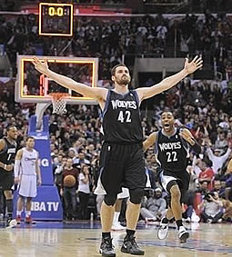

主页 篮球明星 篮球新闻
今天看勇士跟鹈鹕的比赛，史蒂芬•库里投进了13记三分球，打破了由他自己，还有科比和马绍尔的单场12个三分的记录，创造了NBA新的单场命中三分记录。看了的确让我很激动，因为我也很欣赏库里的三分，也专门研究过他的投篮。
 说起篮球，我是上高中的时候爱上篮球的，到底是什么原因，我也记不清了。篮球这项运动让我痴迷，虽然我一开始什么也不会，也没有人教我什么运球、投篮、上篮……但是我会自己去琢磨，看别人打球，看教学视频，买篮球先锋报，只要我能想到的办法我都会去尝试。
我现在还记得那股对篮球的热情劲。读高中时，夏天中午12点放学，到了13点就不能在篮球场打篮球。我有时会坐上二十多分钟的公交，去市里的体育中心打球。有天有个同学发现了个的篮球场，就在学校附近。那是个聋哑学校，虽然篮球场很破旧，框也比正常的矮得多，我跳起来都能摸到篮筐。但这样至少不用辛苦跑那么远，心里还是挺高兴的。
我很喜欢看NBA的篮球比赛，那时在学校里只有两个地方能够看比赛，一个是学校食堂，再一个就是校外。那时姚明还没有退役，那个时候中午还有比赛在继续，食堂里就会围满了看球的同学，尤其是有火箭的比赛，那个兴奋劲，不言而喻。记得09年季后赛火箭打湖人，那是火箭首次进入次轮，姚明每一次拿球进攻，我们在看都为他加油，没进就会叹息，尤其是到最后关键时刻，心里非常的紧张。尤其是看到科比投进那些后仰跳投，心里是挺恨的。有时食堂不放比赛，我就会去校外吃饭，真正目的其实是看比赛。
上大学时，我第一时间就是买一个篮球，我经常带头约班上的同学一起去篮球场打球。有时是自己带着球跟陌生人打，虽然不认识，打着打着就成了球友，虽然叫不出名字。
读高中时，很规律的事情就是每周买两份篮球先锋报，有时上课也看。记得高中时大家谈论篮球是最多的，我们在一起讨论科比，艾弗森，加内皮尔斯，韦德……这是我们这一代心中的球星。
记得我的第一个篮球是母亲买给我的。其实那时母亲很反对我将过多的精力用在篮球上，尤其是看到家里对方很高的一摞篮球报纸，她就会很生气。在家里尤其是上午有篮球比赛的时候，她有时会不让我看。所以寒假回家的时候，每当有比赛的时候，我总是希望家里就只有我一个人，这样我就能一个人畅快的看球了。我的堂弟也比较热爱篮球，寒假在家我们会一起看球，也会一起切磋球技。有时走在路上，我会不由自主的就做起投篮的姿势，还有急停跳投的动作。每当我不愉快的时候，我会通过篮球排遣情绪。只要我手里拿着篮球，站在篮球场上，我就感觉到舒心，心里感到踏实。
这就是我与篮球的故事，他是我的朋友，我们会一起走下去。